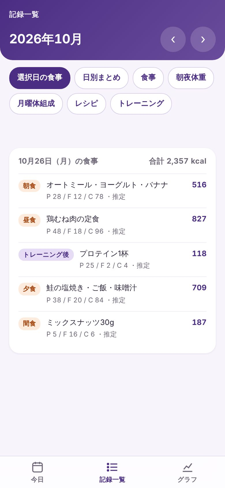
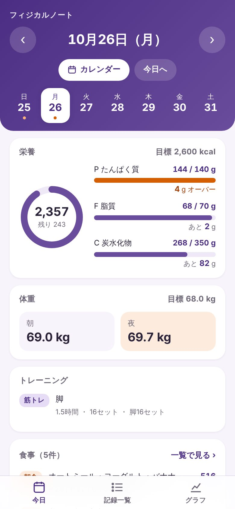
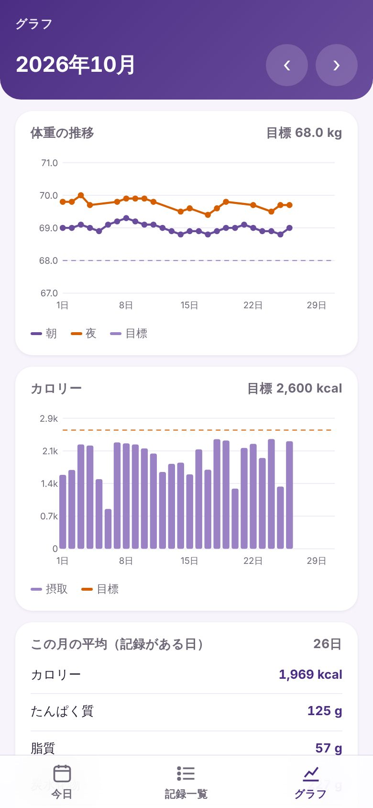

できること
-
今日あと何g食べるか
目標のカロリーとP・F・Cまで、残りの量が出ます。
-
体重とカロリーのグラフ
朝と夜の体重、毎日のカロリーを月ごとに見られます。
-
トレーニングの記録
部位・時間・セット数を、その日の食事と並べて表示します。
はじめかた
パソコンで10分ほどです。Googleアカウントがあれば無料で使えます。
- Googleでログイン自分のGoogleドライブに記録シートが自動でできます。
- ホーム画面に追加iPhoneは 共有 → ホーム画面に追加、Androidは ⋮ → ホーム画面に追加。
- シートに記録するアプリ上部の「記録シートを開く」から。AIに頼むこともできます。
アプリが触れるのは、このアプリが作った記録シートだけです。ドライブのほかのファイルは見えません。
Apps Script で自分で設置する方法（パソコン向け）
-
1
-
2
-
3
ウェブアプリとして公開する
- デプロイ → 新しいデプロイ
- 歯車から種類を ウェブアプリ に
- 実行するユーザー：自分 アクセスできるユーザー：全員
- デプロイ を押して、自分のアカウントで許可する
「Google はこのアプリを確認していません」と出たら、「詳細」→「（安全ではないページ）に移動」で進めます。最後に出る
/execで終わるURLを使います。 -
4
アプリを発行する
シートを開き直して、メニューの Physical Note → アプリとつなぐ を押すと、URLと合言葉が入った状態でここに戻ってきます。
よくある質問
お金はかかりますか？
かかりません。Googleスプレッドシート、Apps Script、このアプリはすべて無料です。
記録はどこに保存されますか？
自分のGoogleドライブにあるスプレッドシートだけです。アプリはシートを直接読みに行くので、間にほかのサーバーはありません。読めるのは、自分のGoogleアカウントでログインしたとき（または自分だけが知っている合言葉があるとき）だけです。
iPhoneでもAndroidでも使えますか？
どちらでも使えます。ブラウザで開いてホーム画面に追加すると、アプリとして使えます。パソコンでも見られます。
記録はどうやって書きますか？
スマホのGoogleスプレッドシートのアプリから、1行に1件ずつ書きます。書き方はシートの「使い方」タブにあります。
GeminiやChatGPTなど、Googleドライブにつなげられる AI に頼むこともできます。最初に下の文を渡しておくと、決まった形で書き込んでくれます。
あなたは私の記録係です。Googleドライブの「Physical Note」というスプレッドシートに、私の食事・体重・トレーニングを書き込んでください。 ・1件を1行で、各タブの最後の行の下に追加する。1行目の見出しと列の順番は変えない ・食事タブ：B 日付（YYYY-MM-DD）、D 食事区分（朝食／昼食／夕食／間食 など）、E 内容・量、F kcal、G P g、H F g、I C g、J 根拠・メモ、K 確定状態（確定／推定） ・体重タブ：B 日付、C 朝夜（朝／夜）、D 体重 kg ・トレーニングタブ：B 日付、C 区分（トレーニング／オフ）、D 部位、E 時間 分、M セット数、N セット内訳 ・栄養がわからないときは、一般的な値やお店の公式の栄養情報から推定し、確定状態を「推定」にして根拠をJ列に書く ・取り消すときは行を消さず、有効の列に FALSE と書く ・書き込んだら、書いた内容を読み返して私に伝える
シートの名前を「Physical Note」に変えておくと、AIが見つけやすくなります。
「Google はこのアプリを確認していません」と出ました。
自分で貼り付けたコードを初めて動かすときに出る画面です。「詳細」→「（安全ではないページ）に移動」→「許可」で進めてください。コードはシートを読むだけで、書き換えや外への送信はしません。
合言葉やリンクを人に知られたら？
シートのメニュー Physical Note → 合言葉を作り直す で変えられます。古いリンクは使えなくなるので、新しいリンクでアプリを開き直してください。
コードを直したのに、アプリに反映されません。
Apps Script で デプロイ → デプロイを管理 → 鉛筆 → バージョン：新バージョン → デプロイ にすると、URLを変えずに反映できます。
記録がアプリに出ません。
日付が「2026-10-26」の形で入っているか、見出しや列の順番が変わっていないかを確かめてください。アプリは画面を下に引っ張ると読み込み直せます。